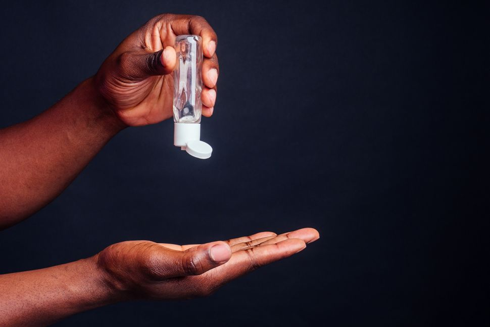

DIY Sanitizer
June 30, 2020
Hand sanitizer sold out? Here's how to make your own.
With concerns about COVID-19 running high, supplies of hand sanitizer at local stores may start to run low. If they run out, is it safe to make your own, and will DIY hand sanitizer protect you against coronavirus infection?
During recent weeks, sales of hand sanitizer have skyrocketed, peaking around 73% higher than they were at this time last year, The New York Times reported yesterday (March 3). Prices of hand sanitizer on Amazon have also soared, with one seller recently offering a 24-pack of Purell travel-size bottles for $400, Newsweek reported. In a pinch, could homemade hand sanitizer do the job? Possibly, but you have to use the right recipe, experts say.
First off, it's important to note that hand sanitizer isn't the first strategy to prevent infection. Frequent and thorough hand washing with soap (for at least 20 seconds) is hands down the best method for reducing hand germs and curbing disease transmission, according to the Centers for Disease Control and Prevention (CDC). When soap and water aren't available, though, hand sanitizers can be used as an alternative, the CDC says. The alcohol in hand sanitizers lends those products their microbe-busting power, and the CDC recommends that sanitizers contain 60% to 95% alcohol in order to eradicate germs. Sanitizers work best on clean hands and may be less effective when hands are greasy or visibly dirty, according to the CDC.
Handmade hand sanitizers can also curb microbe exposure — but only as long as they have the correct ratio of alcohol to other ingredients, according to CNN. "We know it works — just make sure it has enough alcohol in it." Dr. Stephen Morse, a professor of epidemiology at Columbia University in New York, told CBS News. Adding an emollient such as aloe vera gel or glycerin will prevent the hand sanitizer from drying out your skin, and essential oils will give the mixture a pleasant smell, according to a recipe shared by CBS News. Based on the ratio recommended by the CDC, a homemade sanitizer made with 0.67 cups (161 milliliter) of isopropyl alcohol would use 0.33 cups (79 ml) of emollient, CBS says.
In other words: If your solution is two-thirds 91% isopropyl alcohol and one-third emollient, the alcohol content of the mixture will be 60.6% (91 times 2/3). For a higher alcohol content, you could make a solution that's three-fourths 91% alcohol and one-fourth emollient, producing a mixture with alcohol content of 68% (91 times 3/4). A handmade hand sanitizer recipe from the World Health Organization (WHO) — for local production in large quantities in parts of the world where clean water and commercial sanitizer are scarce or unavailable — describes a solution with much higher alcohol content. That mixture is made of 35 cups (8,333 ml) of 96% ethanol, 0.6 cups (145 ml) of 98% glycerol and 1.7 cups (417 ml) of 3% hydrogen peroxide, which is added to reduce bacterial contamination of the sanitizer "and is not an active substance for hand antisepsis," the WHO says. Stored securely in a closed bottle, a homemade hand sanitizer could last for weeks, CBS reported.
Soap up
In general, hand washing is more effective for disease prevention than hand sanitizer because soap removes some microbes that alcohol-based products don't, such as norovirus, Clostridium difficile, which can cause life-threatening diarrhea, and Cryptosporidium, a parasite that causes a diarrheal disease called cryptosporidiosis, the CDC says. Soap also removes traces of pesticides and heavy metals that hand sanitizers can leave behind. Even if hand washing is the better method for avoiding germs, hand sanitizers remain popular because of their convenience, said Dr. William Schaffner, a medical doctor and a professor of medicine in the Division of Infectious Diseases at Vanderbilt University Medical Center in Nashville, Tennessee. You don't have to look for a sink and running water. That's why they have been so widely adopted, because they're so practical," Schaffner told Live Science.
Whether you're applying hand sanitizer or soap and water, the CDC offers guidelines for their use. Sanitizer should be applied to all hand surfaces and rubbed for about 20 seconds, until it is dry. Hand washing should follow five steps: Wetting the hands; lathering soap (covering the backs of your hands, under the nails and between fingers); scrubbing all surfaces for 20 seconds; rinsing with clean water; and drying with a clean towel. Hands should be sanitized throughout the day, especially after coughing, sneezing or blowing your nose; before eating; and after using the restroom, according to the CDC. After you use hand hygiene, avoid people who are coughing and sneezing," Schaffner said. "If a sneeze or a cough suddenly comes upon you and a tissue is not available, bend down and sneeze or cough into the crook of your elbow. An additional thing to do is to avoid shaking hands — use the elbow bump."
And even though local shops may temporarily run out of hand sanitizer as coronavirus anxieties peak, you probably won't need to start crafting your own — more will likely be back in stock within a day or two, Schaffner said.
One company's hand sanitizer products contain potentially deadly substance, FDA warns
The Food and Drug Administration (FDA) is warning the public not to use hand sanitizer products made by a Mexican company because they contain a poisonous substance called methanol, which can be deadly when absorbed through the skin or ingested. The warning applies to nine hand sanitizer products made by the company, called Eskbiochem, according to a statement from the FDA. The agency said it found methanol in samples taken from several of the company's products.
Exposure to methanol can cause nausea, blurred vision, permanent blindness, seizures, coma, permanent damage to the nervous system or even death, according to the FDA. P